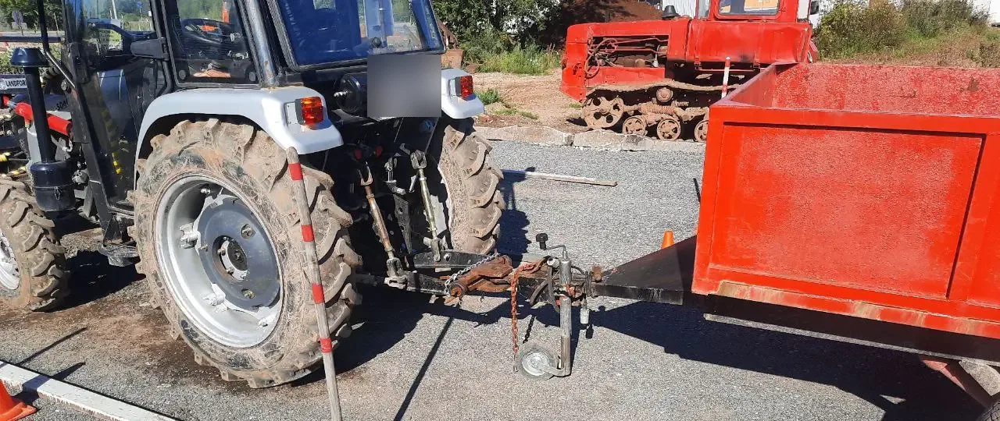
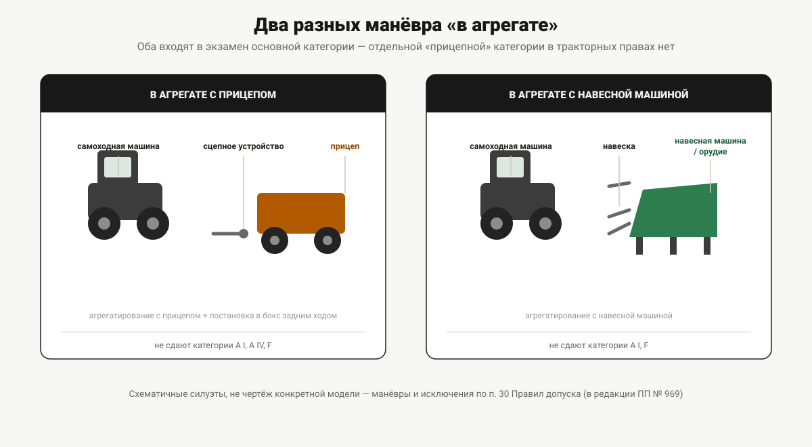

Трактор с прицепом и навесным оборудованием
В удостоверении тракториста нет «прицепной» категории — работа в агрегате входит в основную. Откуда берётся путаница с автомобильными BE и CE и что сдают на практическом экзамене.
Буква E есть и в водительском удостоверении, и в удостоверении тракториста-машиниста. В первом случае она про прицеп: категория BE, CE, DE открываются отдельно и означают именно работу с прицепом определённой массы. Логично предположить, что в тракторных правах она значит то же самое — и здесь начинается путаница, потому что не значит.
Категория E в удостоверении тракториста — это про гусеницы
Пункт 4 Правил допуска к управлению самоходными машинами (постановление Правительства РФ от 12.07.1999 № 796) определяет категорию E коротко и без всякого упоминания прицепов: «гусеничные машины с двигателем мощностью свыше 25,7 кВт». Это гусеничная техника выше определённой мощности — и только она. К прицепному оборудованию, агрегатированию или массе прицепа категория E не имеет никакого отношения.
Здесь же видна асимметрия, которая обычно и порождает вопрос «а как тогда с прицепом»: колёсные машины в этом диапазоне мощности и выше разделены на две категории — C (25,7–110,3 кВт) и D (свыше 110,3 кВт), — а гусеничные машины любой мощности свыше 25,7 кВт остаются одной категорией E, без верхней границы и без дальнейшего деления. Прицеп тут ни при чём: граница проходит по типу хода (колёсный/гусеничный) и по мощности, а не по тому, будет машина работать с прицепом или нет.
Где в норме на самом деле упомянут прицеп
Прицеп и навесное оборудование в Правилах допуска есть — но не как отдельная категория, а как часть практического экзамена. Пункт 30 (в редакции постановления Правительства РФ от 17.07.2024 № 969) перечисляет манёвры первого этапа практического экзамена, и среди них — сразу три пункта про работу в агрегате:
- постановка учебной самоходной машины в агрегате с прицепом в бокс задним ходом;
- агрегатирование самоходной машины с навесной машиной;
- агрегатирование учебной самоходной машины с прицепом (прицепным агрегатом, орудием или оборудованием).
То есть работа с прицепом и с навесным оборудованием сдаётся не как отдельный экзамен на отдельную категорию, а как часть обычного практического экзамена на ту категорию, которая и так открывается. Получили категорию C — умение агрегатировать машину с прицепом или навесным орудием в этот же экзамен уже включено, отдельно доучиваться и пересдавать не нужно.

Кому эти манёвры не сдавать: исключения по категориям
Норма прямо оговаривает, для каких категорий часть этих манёвров не проверяется — и оговаривает избирательно, не одним списком на все три пункта:
| Манёвр | Не сдают категории |
|---|---|
| Постановка в агрегате с прицепом в бокс задним ходом | A I, A IV, F |
| Агрегатирование с навесной машиной | A I, F |
| Агрегатирование с прицепом (прицепным агрегатом, орудием, оборудованием) | A I, A IV, F |
Обратите внимание: агрегатирование с навесной машиной не сдают только A I и F, а вот A IV в этом списке уже нет — то есть кандидаты на A IV не сдают два манёвра из трёх, но именно агрегатирование с навесной машиной для них проверяется. Логика объяснима по каждой категории отдельно: A I — мототехника без конструктивной возможности агрегатирования с прицепом привычного типа, F — сельхозмашины, на которых прицепной манёвр в этом виде обычно неприменим, A IV — пассажирский внедорожный транспорт, где агрегатирование с прицепом типично не предусмотрено конструкцией, но с навесной машиной формально проверяется. Насколько эта логика точна в деталях для каждой категории — вопрос уже не нормы, а конкретной техники; сама норма её не объясняет, только перечисляет исключения.

Полный список всех манёвров практического экзамена и порядок его сдачи — в статье «Практический экзамен на самоходной машине».
Регистрация прицепа — отдельный вопрос
Отдельно от категории и экзамена стоит вопрос регистрации самого прицепа. Прицепы и полуприцепы к самоходным машинам подлежат государственной регистрации в органах гостехнадзора — так же, как и сами машины, по Правилам государственной регистрации самоходных машин и других видов техники (постановление Правительства РФ от 21.09.2020 № 1507). Это отдельная процедура, никак не связанная с категорией в удостоверении: наличие категории C, D или E не освобождает от регистрации прицепа и не подменяет её.
Что это значит на практике
Если вы уже открыли или собираетесь открыть категорию под свою машину — отдельного экзамена или отдельной строчки в удостоверении под работу с прицепом ждать не нужно: умение агрегатировать технику с прицепом или навесным орудием (за перечисленными выше исключениями) входит в обычный практический экзамен той категории, которая и так вам нужна. Полный перечень категорий и то, как они соотносятся друг с другом, — в статье «Категории удостоверения тракториста-машиниста».
Почему автомобильную логику сюда переносить нельзя
В водительском удостоверении буквы BE, CE и DE действительно означают допуск к работе с прицепом определённой массы — это отдельные подкатегории со своим экзаменом. Тракторная система построена иначе: она не выделяет работу с прицепом в отдельную категорию вообще, а встраивает соответствующие манёвры в экзамен основной категории. Формальное совпадение буквы E в обеих системах — то же самое совпадение, что и с буквой A, которая в водительских правах означает мотоциклы, а в тракторных — внедорожную технику: буква одна, системы разные, переносить логику одной на другую не получится. Разбор всех отличий между двумя системами допуска в целом — в статье «Чем права тракториста отличаются от водительских». Автомобильные категории с прицепом (BE, CE, DE) в этой статье не разбираются — им отведена отдельная страница о профессиональном обучении на автомобильные категории.